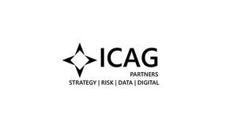

Trade Mark Journal No.2025/009 28 February 2025
UK00004161492 17 February 2025 (35)

- Class 35
- Management consulting; Business consulting; Marketing consulting; Business research consulting; Business management consulting; Business management and consulting; Business consulting services; Professional business consulting; Business management consulting services; Business management and consulting services; Business relocation consulting; Business marketing consulting services; Business organization consulting; Personnel management consulting; Business organisation consulting; Acquisitions (Business -) consulting services; Consulting services relating to marketing; Business organization and management consulting; Consulting services in business organization and management; Business organisation and management consulting; Business organisation and management consulting services; Business process management and consulting; Business consulting for enterprises; Career placement consulting services; Business management consultancy and advisory services; Consultancy and advisory services for business management; Business consultancy and advisory services; Business advisory and consultancy services; Direct marketing consulting; Tax preparation and consulting services; Business planning consultancy; Consultancy and advisory services relating to business management; Business consultancy; Consulting services in the field of Internet marketing; Consultancy and advisory services in the field of business strategy; Assistance, advisory services and consultancy with regard to business planning; Business management consultancy; Consultancy (Professional business -); Professional business consultancy; Business consultancy (Professional -); Business management and consultancy; Assistance, advisory services and consultancy with regard to business management; Management consultancy services; Business management consultancy services; Business management and consultancy services; Business management consulting services in the field of information technology; Marketing consultancy; Professional business consultancy services; Career planning consultancy; Business consultancy services; Business consulting services in the agriculture field; Professional consultancy relating to business management; Corporate management consultancy services; Assistance, advisory services and consultancy with regard to business analysis; Consulting services relating to publicity; Professional consultancy relating to marketing; Business planning and business continuity consulting; Strategic business consultancy; Assistance, advisory services and consultancy with regard to business organization; Business consulting services for digital transformation; Business consultancy to firms; Corporate management consultancy; Business management and organization consultancy services; Consultancy relating to business planning; Consultancy relating to business management; Business marketing consultancy; Personal management consultancy services; Business management and organization consultancy; Consultancy and advisory services relating to personnel management; Consulting services in the field of development of advertising concepts; Business administration consultancy; Advisory and consultancy services relating to import-export agencies; Business management and organisation consultancy services; Employment consultancy; Business organization consultancy; Business recruitment consultancy; Business advice and consultancy relating to franchising; Consultancy relating to auditing; Business appraisal consultancy; Personnel management consultancy services; Business process management consultancy; Consultancy relating to business analysis.
ICAG LTD